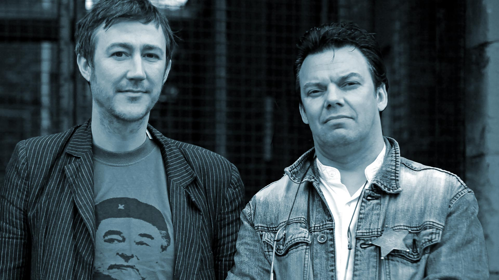
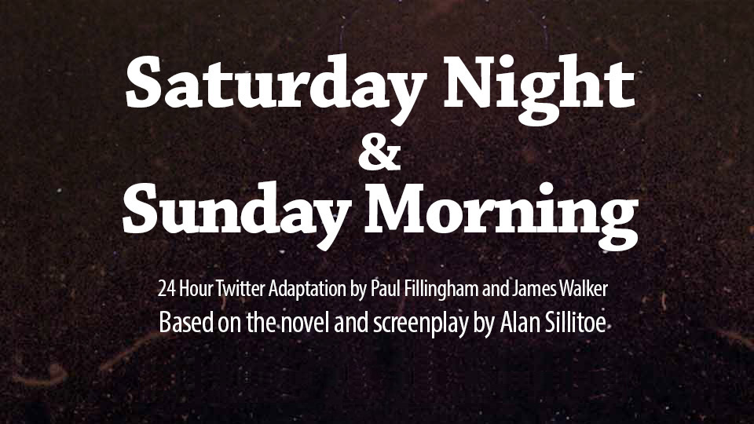
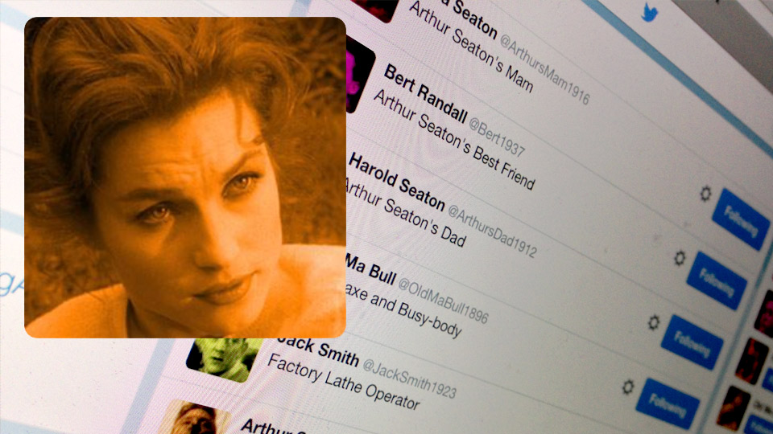

Being Arthur again
Feature - Paul Fillingham, November 2024
Ten years ago this weekend, Paul Fillingham and James Walker presented a live 24-hour Twitter adaptation of Alan Sillitoe's 1958 novel Saturday Night and Sunday Morning as part of the very first National Festival of Humanities.
Long weekend
This weekend marks a decade since James and I embarked on a remarkable venture: a live 24-hour Twitter adaptation of Alan Sillitoe's seminal 1958 novel, Saturday Night and Sunday Morning. This event was part of the inaugural National Festival of Humanities, a celebration that sought to intertwine creative activity with the burgeoning digital landscape.
It was a long night! The adaptation unfolded in real-time, with individual Twitter accounts embodying the characters of Sillitoe's narrative. This innovative approach, akin to the creation of a digital stage, allowed for an engaging dialogue that echoed the original text while incorporating stills from Karel Reisz's 1960 film adaptation. In today's parlance, these accounts might be dismissed as 'fake profiles,' yet they represented a pioneering method of storytelling that resonated with audiences at the time.

Moreover, this digital tapestry was not confined to the internet; it spilled into the physical realm. Public video screens - those portals to shared experiences - displayed the live Twitter feed outside venues such as Broadway Cinema and New Art Exchange in Nottingham, as well as Leytonstone Library and The Mill in Walthamstow - a multimedia initiative known as 'Screens in the Wild'. This duality of presentation highlights a fascinating intersection between digital and physical spaces, an exploration of how narratives can traverse boundaries.
Following this ambitious presentation, the Twitter feed was archived and reconfigured chronologically into a webpage format, allowing audiences to experience the screenplay in its intended sequence. This archival effort underscores a critical aspect of modern storytelling: the importance of preserving ephemeral digital narratives for future audiences.

Who is Arthur?
For those unacquainted with Sillitoe's work, Arthur Seaton - the protagonist of Saturday Night and Sunday Morning is a character steeped in complexity. He is belligerent, fiercely individualistic, and defiantly subversive. His declaration encapsulates his essence. Arthur's journey through the gritty realities of working-class life in Nottingham serves as a lens through which we examine themes of rebellion, existential angst and the stark inevitability of compliance.
I'm me and nobody else. Whatever people say I am, that's what I'm not.
The narrative paints a vivid portrait of post-war Britain, as Arthur navigates a world rife with drinking culture and infidelity - choices that lead to profound consequences. The original film adaptation was groundbreaking for its time, capturing authentic glimpses of Nottingham life: from the bustling Raleigh cycle factory to the lively atmosphere of The White Horse pub. Such portrayals not only cemented Saturday Night and Sunday Morning into the cultural fabric of Nottingham but also catapulted Sillitoe into literary prominence, affording him the freedom to critique society further in works like The Loneliness of the Long Distance Runner.
The 24-hour Twitter event, aptly titled Being Arthur, was funded by the Arts and Humanities Research Council and emerged as a sequel to an earlier project, Sillitoe Trail, which had garnered support from both the BBC and Arts Council England.

A reflection on social media
In 2014, social media offered a fertile ground for experimentation by writers and artists. However, since then, Twitter has undergone significant transformation under Elon Musk's stewardship, rebranded as 'X'. This metamorphosis has been met with skepticism; many users have voiced concerns over its perceived toxicity - an environment where Musk's influence is seen as encroaching upon political discourse in both the United States and the United Kingdom during critical electoral periods.
Disillusioned by these changes, numerous users - including prominent advertisers - have migrated to platforms like BlueSky and Threads. These new arenas promise moderated dialogues but are not without their own challenges regarding censorship and restrictive socio-political narratives. The algorithms governing these platforms often impose punitive measures - such as account suspensions or content throttling - further complicating the landscape for creative expression.
As we navigate this evolving digital terrain, many artists find themselves grappling with these dynamics. Yet, in true Arthur Seaton fashion, we must heed his rallying cry: 'Don't let the bastards grind you down.' This sentiment resonates deeply within our current context - a reminder that resilience is paramount amid shifting tides.